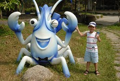
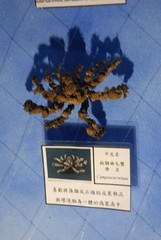
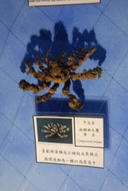
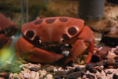

好個舒服的清晨…
連阿徹都感受到了… 
要開始第二天的行程摟…
一大早, 外面是晴天的好天氣….
 我的鏡頭跟太陽對照也還是有星芒的拉..
我的鏡頭跟太陽對照也還是有星芒的拉..
只是醜了一點…
 阿徹在床上滾來滾去…
阿徹在床上滾來滾去…
 你看吧…心情好也不要太得意忘形了…掉下去了吧…
你看吧…心情好也不要太得意忘形了…掉下去了吧…
 門上的倒影…看起來, 我還不是挺胖的…
門上的倒影…看起來, 我還不是挺胖的…
阿徹大概覺得…這有什麼好拍的…
整理一下, 下去吃早餐摟…
 妹妹昨天睡的不好, 一直咳…以後, 真的要記得帶止咳塞劑…
妹妹昨天睡的不好, 一直咳…以後, 真的要記得帶止咳塞劑…
幸好都是媽媽起來照顧妹妹的…
讓徹爸可以睡個好覺.. (大家都知道…徹爸是不太耐超的..很容易沒電…)  餐廳有可愛的擺飾…
餐廳有可愛的擺飾…
 這是今天的早餐…
這是今天的早餐…
突然感覺到…宜蘭的空心菜, 梗都好大(昨天晚上吃的也是很大)…
 外面的景色還不錯…
外面的景色還不錯…
從網站的照片上看…後面本來應該是庭院…
後來大家連接起來變成一條路…庭院也縮水了…
但是我覺得這樣也不錯…昨天走到沙灘時, 蠻愜意的…  妹妹雖然沒睡好, 但是狀況看來OK…
妹妹雖然沒睡好, 但是狀況看來OK…
 餐廳旁邊有一些介紹宜蘭的書籍…
餐廳旁邊有一些介紹宜蘭的書籍…
我拿了一本有關於搶孤的書給阿徹…
他好像蠻有興趣的…
 吃完早餐摟…要準備check out摟…
吃完早餐摟…要準備check out摟…
最後再到陽台休息一下…
 我, 媽媽跟阿徹一起在外面看風景…
我, 媽媽跟阿徹一起在外面看風景…
突然妹妹把門給關上了, 嚇了一跳…
幸好現在妹妹力氣夠大了…試了幾次就開了…
實在很害怕, 她會突然哭出來…就慘了..
 不過媽媽好像沒睡好, 臉有點…
不過媽媽好像沒睡好, 臉有點…
 這張照片怎麼照的呀﹖﹖
這張照片怎麼照的呀﹖﹖
莫非是我爬到欄杆外﹖﹖﹖ —————————————————————————-
好摟, 正式出發摟…
今天第一站, 北關農場-螃蟹博物館…
 這是主要建築物, 依簡介來看…事實上北關農場很廣…
這是主要建築物, 依簡介來看…事實上北關農場很廣…
但是太陽有點大, 實在無心力去逛整個農場…
 門口有隻大螃蟹…蠻壯觀的…
門口有隻大螃蟹…蠻壯觀的…
  遊樂場還有2隻小螃蟹…這就可愛多摟…
遊樂場還有2隻小螃蟹…這就可愛多摟…
 這是博物館大門…
這是博物館大門…


 
  螃蟹蠻多種的…從超正常到超奇怪…都有…
螃蟹蠻多種的…從超正常到超奇怪…都有…
 這應該是館徽吧…設計的蠻不錯的…簡單的方形線條… (奇怪, 這到底是怎麼想出來的呀﹖﹖怎麼幾個方形就變成螃蟹了﹖﹖ 設計真的是要靠天賦的… 媽媽有跳舞, 彈鋼琴的夢…我也有做設計師的夢…)
這應該是館徽吧…設計的蠻不錯的…簡單的方形線條… (奇怪, 這到底是怎麼想出來的呀﹖﹖怎麼幾個方形就變成螃蟹了﹖﹖ 設計真的是要靠天賦的… 媽媽有跳舞, 彈鋼琴的夢…我也有做設計師的夢…)
 這好像是跟日本有合作出的紀念品 (這圖案我好像看過, 該不會我小時候來過吧)…
這好像是跟日本有合作出的紀念品 (這圖案我好像看過, 該不會我小時候來過吧)…
 

 剛剛看到的是標本, 現在的是活生生的螃蟹了…
剛剛看到的是標本, 現在的是活生生的螃蟹了…
真的是從超正常到超奇怪都有呀!!!
 整個場館, 是有點濕…有點冷…不過是還可以接受…
整個場館, 是有點濕…有點冷…不過是還可以接受…
在有限的經費下, 可以維持這樣算是蠻不容易的了..
當然…農場要賺錢不能只靠螃蟹…
這裡也有其他農場都有的彩繪…
 這是徹爸第一次陪阿徹畫…以前都讓他亂畫…他開心就好…
這是徹爸第一次陪阿徹畫…以前都讓他亂畫…他開心就好…
這次我不知道那根筋不對…居然陪他畫起來了… (說個小秘密, 我小學學過2年畫圖毆…)
 妹妹也來插花…畫個幾筆…
妹妹也來插花…畫個幾筆…
 如果要我陪他畫, 當然就不能再像以前那樣大紅大紫亂畫..
如果要我陪他畫, 當然就不能再像以前那樣大紅大紫亂畫..
幸好他沒有太反抗…
 為了不讓妹妹搗蛋…隨便拿了張紙打發她…
為了不讓妹妹搗蛋…隨便拿了張紙打發她…
 妹妹應該有發現到我們打發她的意圖…
妹妹應該有發現到我們打發她的意圖…
鐺…鐺…鐺鐺…畫好摟…
不過PK題又出現摟…
 圖C-1
圖C-1
 圖C-2
圖C-2
螃蟹臉上 的點點是阿徹的創意…我覺得效果不錯…
 農場都處都有畫好的螃蟹…都畫的超好的…
農場都處都有畫好的螃蟹…都畫的超好的…
 農場還有準備一些吃的…油麵, 仙草冰…等等
農場還有準備一些吃的…油麵, 仙草冰…等等
 吃了一些東西, 乘個涼吧…
吃了一些東西, 乘個涼吧…
哥哥突然要去遊戲區玩…挖勒..中午耶..
好吧..你要去就去吧…
 你看吧…汗是用滴的…
你看吧…汗是用滴的…
玩夠了吧…該下一站摟… ————————————————————————–
中午本來想吃吃小7就好…
但是, 想到昨天的烏龍事件…有點不甘心…
所以…一定要吃到昨天那一間-更生海產店….  他們的座位有圍起來, 風就比較小了…但是情趣少了一點…
他們的座位有圍起來, 風就比較小了…但是情趣少了一點…
 這是他們出名的吻仔魚羹…媽媽說..魚怎麼都小小的…
這是他們出名的吻仔魚羹…媽媽說..魚怎麼都小小的…
 照例還是有一盤蝦子…吃起來跟昨天那家差不多…
照例還是有一盤蝦子…吃起來跟昨天那家差不多…
 青菜就不吃空心菜了..改吃別的菜…
青菜就不吃空心菜了..改吃別的菜…
整個吃下來…覺得也不是很便宜…
覺得跟昨天那家差不多(好像還比較貴)…
但是…飯好吃多了(海產店…好像不能以白飯論好壞…)… ————————————————————————–
我們的下一站, —礁溪川湯溫泉飯店—
 一上了車….妹妹終於不支, 睡著了…
一上了車….妹妹終於不支, 睡著了…
我們為了讓妹妹睡久一點…還在小7休息了30分鐘…
川湯的湯區還不錯…
不過, 更衣區…冷氣還是不夠強…
每次泡完, 就又流了一身汗… (可能是太胖吧…我還是對日本的泡湯環境比較讚賞…)  哥哥的泳帽夠炫吧…
哥哥的泳帽夠炫吧…
台灣的泡湯都好像是遊戲區…
大家是來玩水的…
 妹妹也換上可愛的泳衣摟…
妹妹也換上可愛的泳衣摟…
 果然夠胖…妹妹好小隻…
果然夠胖…妹妹好小隻…
 這個溜滑梯…哥哥應該有玩了30次以上…
這個溜滑梯…哥哥應該有玩了30次以上…
 沒錯吧…泡湯區跟玩水區沒2樣吧…
沒錯吧…泡湯區跟玩水區沒2樣吧…
還有水槍勒(耳且是電動的)…
呆了3個鐘頭, 要回家摟…
 這張照片是妹妹跟媽媽在外面等爸爸哥哥時, 妹妹幫媽媽照的…
這張照片是妹妹跟媽媽在外面等爸爸哥哥時, 妹妹幫媽媽照的…
看來也可以慢慢訓練妹妹照相摟…
ps.本來要在礁溪吃刷刷鍋的…
最後覺得開車回板橋也才一個鐘頭…
在外面吃東西, 不僅貴, 還要賭是不是好吃…
還是撐回家吃熟悉的東西好了…